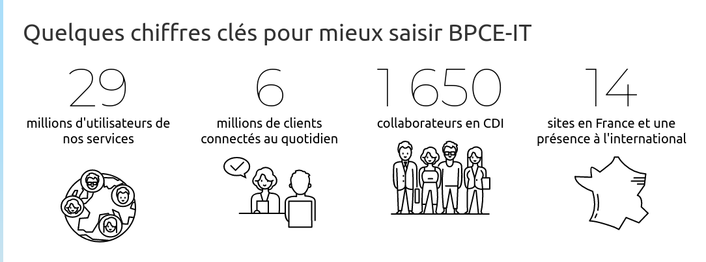

Portfolio S6 - BUT Informatique
📚 SAVOIRS ET SAVOIR-FAIRE DÉVELOPPÉS DANS LE PORTFOLIO
Compétence 1 : Réaliser un développement d'application
Savoirs fondamentaux maîtrisés :
- Création de scripts Jython - Développement de scripts pour l'automatisation dans l'environnement XL Release
- Maîtrise de l'outil XL Release
- Développement de tâches automatisées
Savoir-faire techniques démontrés :
- Vérification mainframe - Utilisation de commandes CURL pour interagir avec le mainframe DDO1
- Analyse de codes de retour (RC) - Traitement des résultats d'exécution (codes 0000, 0002, etc.)
- Architecture client-serveur - Implémentation de communication entre XL Release et le mainframe
Compétence 2 : Optimiser des applications
Savoirs fondamentaux maîtrisés :
- Analyse de performance - Identification des goulots d'étranglement et optimisation des temps d'exécution
- Profilage de code - Analyse des scripts
- Optimisation des ressources - Réduction des actions manuelles et automatisation
- Architecture efficace - Conception de solutions évolutives et performantes
Savoir-faire en optimisation :
- Gestion des erreurs - Système de vérification et reprise automatique des tâches incomplètes
- Automatisation des variables - Récupération et réutilisation automatique des données saisies
- Élimination des redondances - Suppression des ressaisies manuelles pour gain de temps
- Formatage automatique des dates - Conversion et calcul automatique des dates/heures
2. Distinction des figures
-
"Trace X" : Figures concernant le Portfolio
"Illustration X" : Figures concernant la SAÉ
MON ALTERNANCE
Présentation de l'entreprise
J'ai réalisé mon alternance dans l'entreprise BPCE-IT à Dijon. BPCE Infogérance & Technologies est une entreprise du groupe BPCE, 2ème groupe bancaire en France qui est spécialisée dans le secteur bancaire et assurantiel. Créée en 2015, BPCE Infogérance et Technologies est un Groupement d'Intérêt Économique (GIE) dont la mission principale est de consolider les infrastructures informatiques du Groupe BPCE et de mutualiser les achats afin d'optimiser les coûts et améliorer la qualité de service.
Présentation du sujet
En tant qu'alternante, j'ai contribué au développement de templates répondant aux spécificités demandées par l'équipe. Mon projet est la création d'un template pour la livraison de bordereau, qui contient des programmes à tester et installer en production. L'objectif de ce template est de remplacer l'outil que mon équipe utilise, à savoir des demandes Pulse sous Sun afin d'avoir notre propre outil pour faire cette livraison.
XL Release est un outil idéal car il nous permet une grande liberté dans les fonctionnalités dont on a besoin. De plus, il permet d'automatiser des tâches spécifiques ce qui fait gagner du temps dans la livraison des bordereaux. Le gain de temps élimine les manipulations manuelles répétitives, source principale d'erreurs humaines dans les processus de livraison. Chaque erreur dans un environnement bancaire peut avoir des conséquences réglementaires et financières importantes.